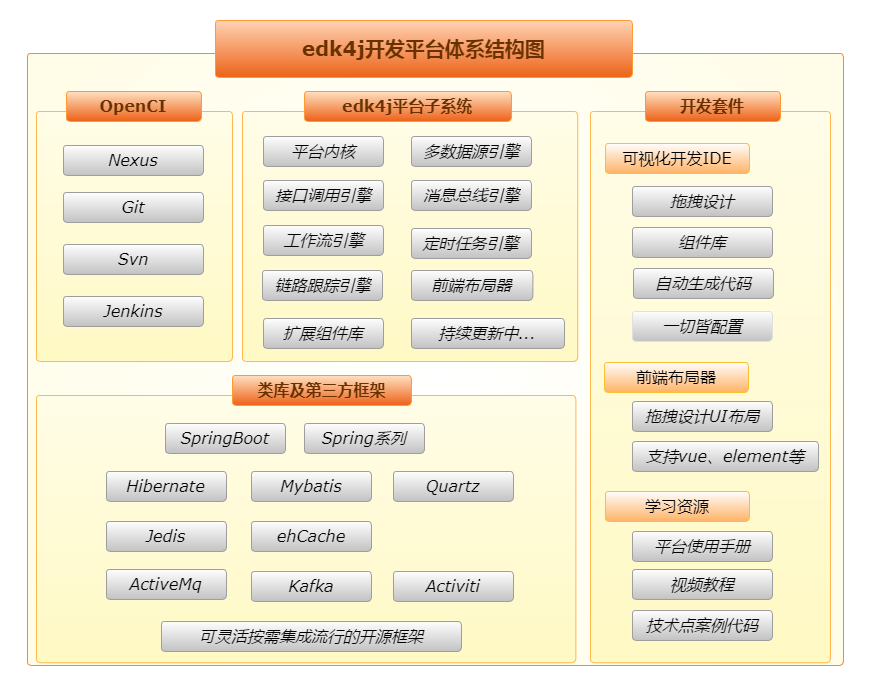

1.6、平台系统架构
平台体系结构
EDK内核设计
子系统架构设计

数据结构设计完善，能很好的贯穿于交易过程中；
数据库引擎：目前支持oracle、mysql、db2这三种关系型数据库；
配置引擎：在系统加载时读取所有配置文件中的配置内容，并提供按关键字查询配置参数、修改参数值的功能；
Mvp引擎：包含“mvp解析器”和 “mvp执行器”。
“mvp解析器”：在系统启动时加载所有mvp配置文件（后缀名为.api的配置文件）；
“mvp执行器”：负责监听请求，解析并执行相应的mvp配置，依据bpm配置提取“请求数据”，进而调用bpm引擎执行对应的业务逻辑，执行后依据bpm配置组织并返回答复数据或答复页面跳转；
BPM引擎：包含 “bpm解析器”和“bpm执行器”。
“bpm解析器”：在系统启动时加载所有业务逻辑配置文件（后缀名为.edkBpm的配置文件）；
“bpm执行器”：负责执行bpm配置文件中的业务逻辑流；
缓存管理引擎：加载缓存配置，提供对缓存数据的增删改查等功能，支持redis+ehcache+mq组成二级缓存；
异常处理引擎：统一拦截异常，提取异常信息，组织返回结果；
日志记录引擎：负责记录“运行日志”和“交易日志”。依据log4j2配置规范记录“运行日志”到日志文件；依据业务逻辑流中的配置规范记录“交易日志”到数据库；
系统审计引擎：提供开放接口，负责动态的更新bpm、mvp配置，不需要重启服务器，实现“热部署”；
对于“个性化初始化动作”、“权限检查”、“请求数据解密”等动作，都有开放的接口，只需要实现接口，在配置中加以设置便可实现；
多数据源引擎：解决下面两个问题，
同一交易中操作多个数据库；
分布式事务管理；
接口调用引擎：可以调用http、socket、webservice等形式的接口，支持各种复杂报文，可控制调用并发量；
定时任务引擎：将任务定义配置后，该引擎可正确的解析执行，并支持任务服务器集群执行；
工作流引擎：可视化设计流程模型、流程发布定义，个性化设置流程定义中各个节点的处理人、工作页面、执行业务逻辑，全面管理流程实例的创建、流转等活动，支持复杂流程；
消息总线引擎：默认支持activeMQ，可以通过配置使用kafka；
链路跟踪引擎：追踪并绘制每个请求的完整调用链路，收集调用链路上每个服务的明细日志和性能数据。可用于解决分布式链路跟踪、数据追溯、异常追溯等需求；
扩展组件库：将平台迭代完善过程中新出现的具有“通用性”、“复用性”的组件或功能模块，归纳到“扩展组件库”中，包括：“接口实现”、“业务逻辑Action”、“通用工具类”、“通用功能模块”等。